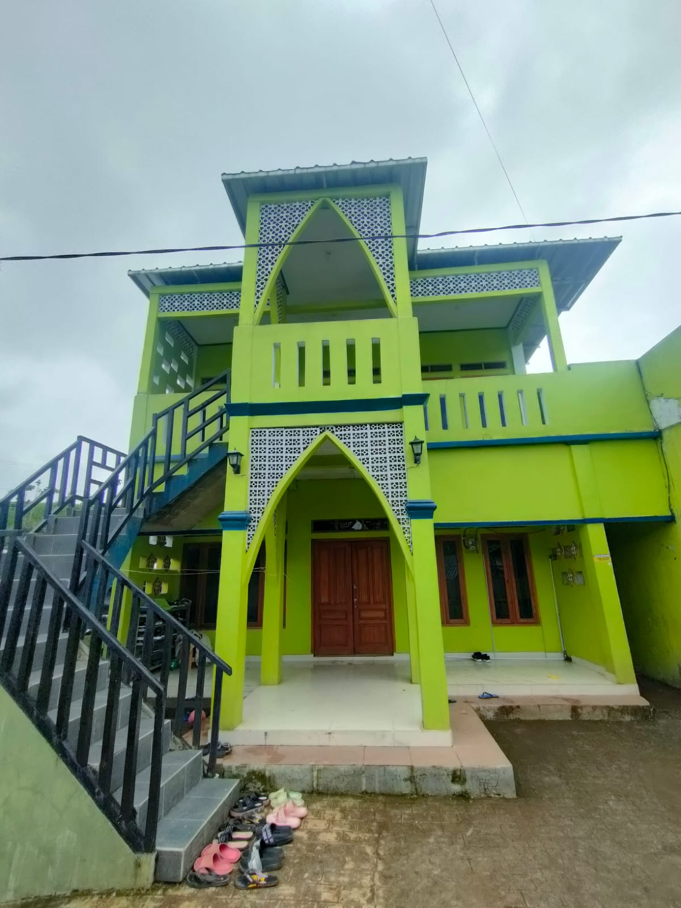
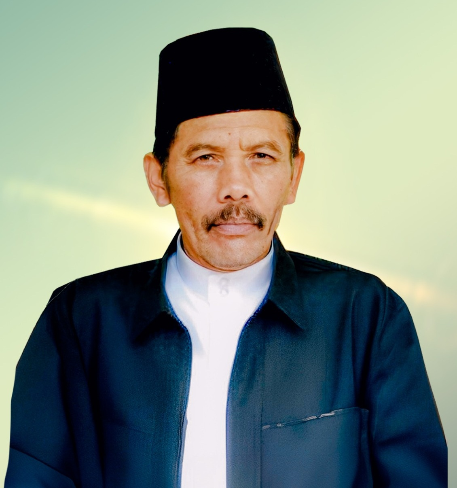
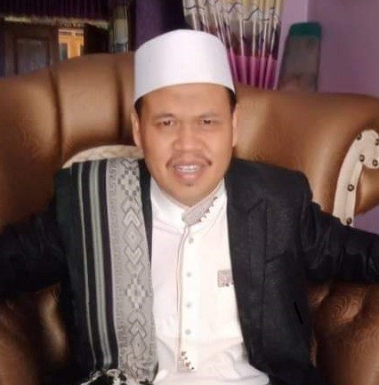
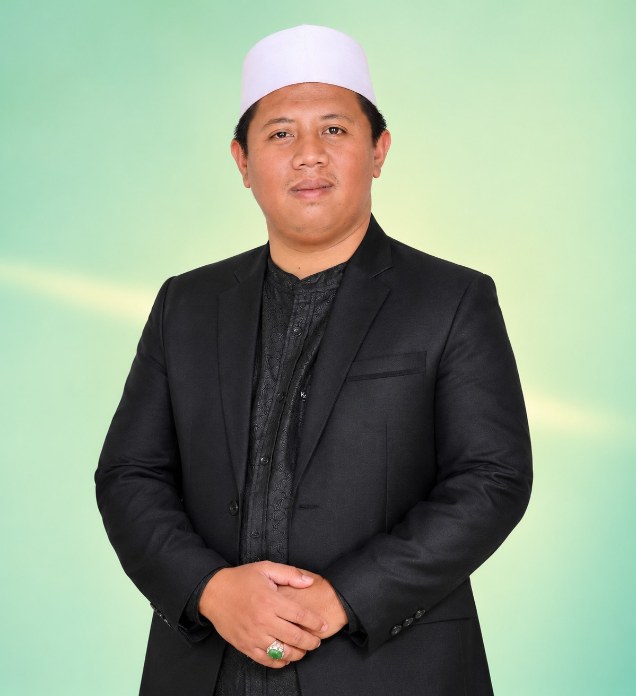

Membangun Generasi Qur'ani, Berilmu dan Berakhlakul Karimah
Yayasan Pondok Pesantren Al-Qur'an Khoirul Huda berkomitmen menyelenggarakan pendidikan Islam yang berkualitas, membentuk generasi beriman, berilmu dan bermanfaat bagi masyarakat.
Mengenal Yayasan KamiYayasan Pondok Pesantren Al-Qur'an Khoirul Huda
Pondok Pesantren Al-Qur'an Khoirul Huda merupakan lembaga pendidikan Islam yang berkomitmen membina generasi Qur'ani melalui pendidikan, pembelajaran Al-Qur'an dan pembentukan akhlak mulia.
Berlokasi di Cibadak, Margaluyu, Pangalengan, Kabupaten Bandung, Jawa Barat.

Tokoh Pendiri Khoirul Huda
Dedikasi, perjuangan dan pengabdian dalam membangun generasi Qur'ani.

Almarhum Al-Maghfurlahu KH. Jajang Rohmadin
Pendiri

Almarhum Al-Maghfurlahu KH. Ilyas Badruzzaman
Pendiri

H. Moch Khoerudin Ab, S.Pd.I
Pendiri, Ketua Yayasan & Pengasuh
Perjalanan Berdirinya Khoirul Huda
Pondok Pesantren Al-Qur'an Khoirul Huda didirikan pada bulan Oktober 2018 oleh H. Moch Khoerudin Ab, S.Pd.I bersama kedua orang tua beliau, Almarhum Al-Maghfurlahu KH. Jajang Rohmadin dan Almarhum Al-Maghfurlahu KH. Ilyas Badruzzaman. Berawal dari niat dan perjuangan untuk mengembangkan pendidikan Islam, Khoirul Huda hadir sebagai lembaga pendidikan dan pembinaan generasi Qur'ani yang berilmu, beriman dan berakhlakul karimah.
Unit Pendidikan Kami
Melayani pendidikan dari usia dini hingga pendidikan menengah dan pesantren.
Pondok Pesantren
Pendidikan Al-Qur'an dan pembinaan karakter santri.
KB Khoirul Huda
Pendidikan anak usia dini yang Islami dan menyenangkan.
MDTA Khoirul Huda
Pendidikan dasar keagamaan dan pembelajaran Islam.
SMP IT Khoirul Huda
Pendidikan menengah pertama terpadu dan Islami.
SMA IT Khoirul Huda
Pendidikan menengah atas berlandaskan nilai-nilai Islam.
Majelis Ta'lim
Wadah pembinaan ilmu agama dan kegiatan keislaman.
Bimbingan Haji & Umrah
Pembinaan dan pendampingan ibadah haji dan umrah.
Program Unggulan Yayasan
Pendidikan Al-Qur'an, pembinaan akhlak, pengembangan potensi santri, kegiatan keagamaan dan digitalisasi pesantren.
Informasi dan Kontak Yayasan
Yayasan Pondok Pesantren Al-Qur'an Khoirul Huda
Cibadak – Margaluyu – Pangalengan – Kabupaten Bandung
Jawa Barat, Indonesia
Informasi lebih lanjut dapat menghubungi pihak yayasan.